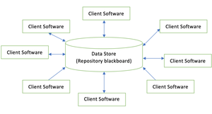

5.4 Architectural Design / Software Architecture
Software needs an architectural design to represent the overall structure of the system. Architectural design is the specification of the major components of a system, their responsibilities, properties, interfaces, and the relationships and interactions between them.
IEEE defines architectural design as "the process of defining a collection of hardware and software components and their interfaces to establish the framework for the development of a computer system." The software built for computer-based systems can exhibit one of many architectural styles.
At the architectural level, the overall structure is chosen but internal details of major components are ignored — modules are treated as black boxes. Designers focus on coupling and cohesion between modules (see §5.10 and §5.2).
System category consists of
Every software architecture is built from four fundamental building blocks. The use of architectural styles is to establish a structure for all the components of the system.
- Components: A set of elements (e.g., a database, computational modules) that perform a function required by the system.
- Connectors: A set of connectors that help in coordination, communication, and cooperation between the components.
- Constraints: Conditions that define how components can be integrated to form the complete system.
- Semantic models: Models that help the designer understand the overall properties of the system (performance, reliability, scalability).
Issues in architectural design
- Gross decomposition: Breaking the system into major components or subsystems.
- Functional allocation: Assigning each required function to the appropriate component.
- Component interfaces: Defining how components communicate — APIs, message formats, protocols.
- Non-functional properties: Scaling, performance, resource consumption, reliability of each component.
- Communication and interaction: How components exchange data and control signals.
Taxonomy of architectural styles
An architectural style is a recurring organisational pattern for the components and connectors of a system. The five major styles covered in the syllabus are: data-centered, data flow, call-and-return, object-oriented, and layered.
1. Data-centered architecture
A data store resides at the centre of this architecture and is accessed frequently by other components that update, add, delete, or modify the data present within the store.

- Client software accesses a central repository. Variations transform the repository into a blackboard — when data of interest changes, notifications are sent to client software.
- Data can be passed among clients using the blackboard mechanism.
- Clients do not communicate directly with each other — all sharing goes through the central store.
- This style promotes integrability: existing components can be changed and new client components can be added without the permission or concern of other clients.
Advantages:
- Repository of data is independent of clients.
- Clients work independently of each other.
- It may be simple to add additional clients.
- Modification can be very easy.
2. Data flow architecture
This architecture is used when input data is transformed into output data through a series of computational or manipulative components. The most common form is pipe-and-filter architecture.
- A set of components called filters are connected by pipes.
- Pipes transmit data from one component to the next.
- Each filter works independently — designed to take data input of a certain form and produce data output of a specified form for the next filter.
- Filters do not require any knowledge of the working of neighbouring filters.
- If the data flow degenerates into a single line of transforms, it is termed batch sequential — accepts a batch of data and applies a series of sequential components to transform it.
Advantages:
- Encourages upkeep, repurposing, and modification.
- Supports concurrent execution.
Disadvantages:
- Frequently degenerates to a batch sequential system.
- Does not suit applications that require greater user engagement (interactive systems).
- Not easy to coordinate two different but related data streams.
3. Call-and-return architecture
Used to create a program that is easy to scale and modify. Many sub-styles exist within this category. Two important sub-styles are:
Main program or subprogram architecture

- The main program structure decomposes into a number of subprograms or functions arranged in a control hierarchy.
- The main program contains subprograms that can invoke other components.
- Closely related to function-oriented design (see §5.14) and top-down design (§5.13).
Remote procedure call (RPC) architecture
- Components of a main program or subprogram architecture are distributed among multiple computers on a network.
- A component in one machine can invoke a procedure on another machine as if it were a local call.
- Common in client-server and distributed systems.
4. Object-oriented architecture

The components of the system encapsulate data and the operations that must be applied to manipulate the data. Coordination and communication between components are established via message passing.
Characteristics:
- Objects protect the system's integrity.
- An object is unaware of the internal representation of other objects.
Advantages:
- Enables the designer to decompose a problem into a collection of autonomous objects.
- Other objects are unaware of an object's implementation details, so changes can be made without impacting other objects.
Links to object-oriented design in §5.15.
5. Layered architecture

A number of different layers are defined, with each layer performing a well-defined set of operations. Each layer performs operations that become progressively closer to the machine instruction set.
- At the outer layer, components receive user interface operations.
- At the inner layers, components perform operating system interfacing — communication and coordination with the OS.
- Intermediate layers provide utility services and application software functions.
- Each layer is independent — code in one layer can be modified without affecting others.
- Typical four layers in business systems: presentation (UI), business (logic), application (communication), and data (database/storage).
- Classic example: OSI-ISO (Open Systems Interconnection — International Organisation for Standardisation) communication model — seven layers from physical to application.
- Most commonly used pattern for the majority of software systems.
Comparison of architectural styles
| Style | Key idea | Best suited for |
|---|---|---|
| Data-centered | Central repository / blackboard | Shared data, multiple independent clients |
| Data flow | Pipe-and-filter transforms | Compilers, data pipelines, batch processing |
| Call-and-return | Control hierarchy / RPC | Procedural programs, distributed systems |
| Object-oriented | Encapsulated objects, message passing | Complex domains with interacting entities |
| Layered | Stacked layers of abstraction | Business apps, network protocols (OSI) |
Other architectural styles (exam awareness)
- Client-server: Clients request services; servers provide them — common in distributed systems (sub-style of call-and-return).
- Event-driven: Components react to events — common in GUI and real-time systems.
- Microservices: System decomposed into small, independently deployable services communicating over a network.
Architecture vs detailed design
- Architectural design adds important structural details ignored during interface design but still hides internal module implementation.
- Detailed design of individual modules is deferred until the architectural structure is agreed (see §5.5).
- The architecture provides conceptual integrity — a coherent overall structure that all developers follow.
Q: What is architectural design? Explain the taxonomy of architectural styles with examples.
Model answer points:
- IEEE definition: hardware/software components + interfaces → framework for system development.
- System category: components, connectors, constraints, semantic models.
- Data-centered: central repository/blackboard; clients independent; promotes integrability.
- Data flow: pipe-and-filter; batch sequential variant; advantages (concurrency) vs disadvantages (not interactive).
- Call-and-return: main program/subprogram hierarchy; RPC for distributed systems.
- Object-oriented: encapsulation + message passing; changes isolated per object.
- Layered: outer UI layer → inner OS layer; OSI-ISO example; most common style.
- Modules treated as black boxes at architectural level; coupling/cohesion focus.